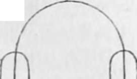
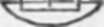

The Use Of The Salts Of Iodine. Part 4
Description
This section is from the book "A Manual Of Photography", by Robert Hunt. Also available from Amazon: A Manual of Photography.
The Use Of The Salts Of Iodine. Part 4
The picture is formed of iodide of silver in its light parts, and oxide of silver in its shadows. As the yellow salt darkens under the influence of light, it parts with its iodine, which immediately attacks the dark oxide, and gradually converts it into an iodide. The modus operandi of the restoration which takes place in the dark is not quite so apparent. It is possible that the active agent being quiescent, the play of affinities comes undisturbed into operation; that the dark parts of the picture absorb oxygen from the atmosphere, and restore to the lighter portions the iodine it has before robbed them of. A series of experiments on the iodide of silver in its pure state will still more strikingly exhibit this very remarkable peculiarity.
Precipitate with any iodide, silver, from its nitrate in solution, and expose the vessel containing it, liquid and all, to sunshine; the exposed surfaces of the iodide will blacken : remove the vessel into the dark, and, after a Jew hours, all the blackness will have disappeared. We may thus continually restore and remove the blackness at pleasure. If we wash and then well dry the precipitate, it blackens with difficulty, and if kept quite dry it continues dark; but moisten it, and the yellow is restored after a little time. In a watch-glass, or any capsule, place a little solution of silver; in another, some solution of any iodine salt; connect the two with a filament of cotton, and make up an electric circuit with a piece of platina wire: expose this little arrangement to the light, and it will be seen, in a very short time, that iodine is liberated in one vessel, and the yellow iodide of silver formed in the other, which blackens as quickly as it is formed.
Place a similar arrangement in the dark ; iodine is slowly liberated. No iodide of silver is formed, but around the wire a beautiful crystallization of metallic silver. Seal a piece of platina wire into two small glass tubes; these, when filled, the one with iodide of potassium in solution, and the other with a solution of the nitrate of silver, reverse into two watch-glasses, containing the same solutions; the glasses being connected with a piece of cotton. An exposure during a few hours to daylight will occasion the solution of the iodine salt in the tube to become quite brown with liberated iodine: a small portion of the iodide of silver will form along the cotton, and at the end dipping in the salt of silver. During the night the liquid will become again colourless and transparent, and the dark salt along the cotton will resume its native yellow hue.
From this it is evident that absolute permanence will not be given to these photographs until we succeed in removing from the paper all the iodide of silver formed. The hyposulphites dissolve iodide of silver; therefore it might have been expected, à priori, they would have been successful on these drawings. If they are washed over with the hyposulphite of soda, and then quickly rinsed in plenty of cold water, the drawing is unproved, but no better fixed than with cold water alone. If we persevere in using the hyposulphite, the iodide is darkened by combining with a portion of sulphur, and the lights become of a dingy yellow, which is not at all pleasant.
No plan of fixing will be found more efficacious with this variety of photographic drawings, than soaking them for some hours in cold water, and then well washing them in hot water.
It often happens that a picture, when taken from the camera, is less distinct than could be desired: it should not, however, be rejected on that account. All the details exist, although not visible. In many cases the soaking is sufficient to call them into sight; if they cannot be so evoked, a wash of weak ammonia or muriatic acid seldom fails to bring them up. Care, however, must be taken not to use these preparations too strong, and the picture must be washed on the instant, to remove the acid or alkali.
One very singular property of these photographs is, that when first prepared, and after the washing, they are not fixed or otherwise ; but when exposed to sunshine, they change in their dark parts from a red to a black. This peculiarity will be found by experiment to be entirely dependent on the influence of the red rays, or that portion of the sunbeam which appears to have the greatest heating power : hence regarded as the seat of greatest calorific power.
I have before mentioned the peculiar state of equilibrium in which the paper is when wetted with the hydriodate, and that a slight difference in the incident light will either bleach or blacken the same sheet. If four glasses, or coloured fluids, be prepared, which admit respectively the blue, green, yellow, and red rays, and we place them over a paper washed with some solution of an iodide having an engraving superposed, it will be bleached under the influence of the blue light, and a perfect picture produced; while, under the rays transmitted by the green glass, the drawing will be a negative one, the paper having assumed, in the parts which represent the lights, a very defined blackness. The yellow light, if pure, will produce the same effect, and the red light not only induces a like change, but occasions the dark parts of the engraving to be represented in strong lights: this last peculiarity is dependent on the heating rays, and opens a wide field for inquiry. My point now, however, is only to show that the darkening of the finished photograph is occasioned by the least refrangible rays of light; whereas its preparation is effected by the most refrangible.
I know not of any other process which shows, in a way at once so decided and beautiful, the wonderful constitution of every sunbeam which reaches us. Yet this is but one of numerous results of an analogous character, produced by these opposite powers, necessary to the constitution of that solar beam, which is poured over the earth, and effects those various changes which give to it diversified beauty, and renders it conducive to the well-being of animated creatures.
Continue to:
- prev: The Use Of The Salts Of Iodine. Part 3
- Table of Contents
- next: The Use Of The Salts Of Iodine. Part 5